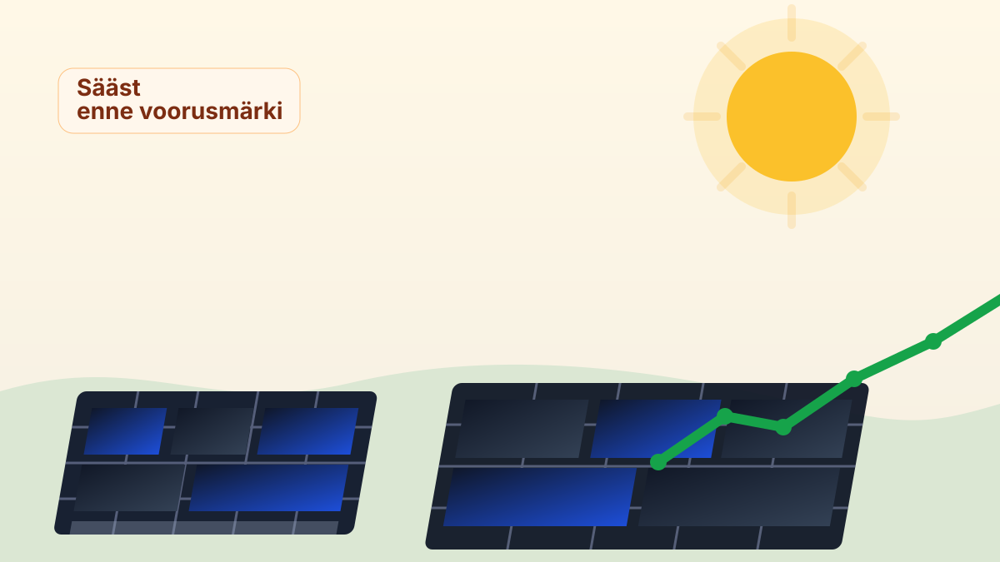

Päikesepaneelidest sai säästuprojekt

BBC kirjutab, et Ühendkuningriigis on päikesepaneelide paigaldus hüpanud 11% üles võrreldes eelmise aastaga. Põhjus on üsna arusaadav: kui elektriarved muutuvad närviliseks, hakkab omatootmine tunduma vähem ideoloogilise, rohkem praktilise otsusena.
Gloucestershire’i päikeseettevõtte juht ütles, et pärast Iraani konflikti ja energiakulude tõusu kasvas nende äriklientide huvi 65%. Somersetis paigaldas Numatic oma Chardi tehase taha 2,672 paneeli ning pani sellele ligi 1,5 miljonit naela. Tasuvusaeg pidi jääma alla nelja aasta; akude ja muunduritega loodetakse katta juba umbes pool energiavajadusest.
See on huvitav nihe: päikesepaneel ei ole enam ainult rohelise usu märk, vaid üha sagedamini üsna kainelt arvutatud riskimaandus. Kui fossiilne energia vehib hindadega nagu halb vihm, muutub katusepäike äkitselt väga mõistlikuks.
Teisisõnu: kliimapoliitika ei pea alati algama loosungist. Mõnikord algab see täiesti igava tabeliga, kus üks rida teeb elektriarvele viimaks selgeks, et ka päike võib olla konkurentsivõimeline.
Loe algallikat: BBC News – "Rise in solar panel sales as people 'want to save money'"
selle artikli sisu sõnastatud AI poolt: (mudel gpt-5.4-mini)